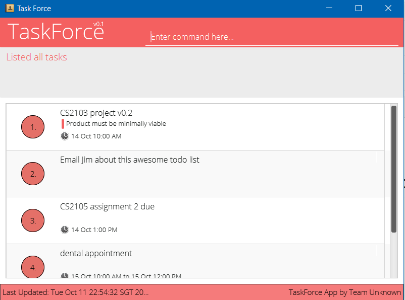
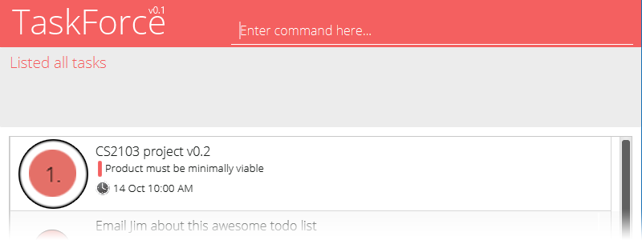

Through the config command, you can change the name of the program or set your free time .
If you tried to use recurring functionality on a Reminders, the system will only add it once.
Ensure you have Java version 1.8.0_60 or later installed in your Computer.
Having any Java 8 version is not enough.
This app will not work with earlier versions of Java 8.
taskforce.jar from the releases tab.Double-click the file to start the app. The GUI should appear in a few seconds.

help and pressing Enter will open the help window.addwash the toilet adds a reminder to wash the toilet to the task list.searchd/0 searches the task list for all tasks happening today.exit : exits the appMany commands requires an INDEX which is the number associated to the task in the current list.
> 
> #### The index of a task is the number beside it
Refer to the Features section below for details of each command.
Command Format
- Words in
UPPER_CASEare the parameters.- Items in
[SQUARE_BRACKETS]are optional.- Items with
...after them can have multiple instances.- The order of parameters are not fixed.
helpDisplays information on how to use commands.
Format: help [COMMAND]
- If a
COMMANDis given, help is displayed for that command only.- If no
COMMANDis given, help is displayed for all commands available.- Help is not shown if you enter an incorrect command e.g.
help abcd
addAdds a task to the task list.
Format:
Reminder: add TASKNAME [d/DESCRIPTION] [t/TAG]...
Deadline: add TASKNAME [d/DESCRIPTION] [et/END_DATE] [t/TAG]...
Event: add TASKNAME [d/DESCRIPTION] [st/START_DATE] [et/END_DATE] [t/TAG]...
- Tasks can have any number of tags (including 0)
- Date format is MM-DD-YYYY HHMM (24 hour Format) e.g.
st/ 10-22-2016 1500- The command also supports natural language dates such as
today 6pm- See the section On Entering Dates for more details
- If no time is specified, the time will be assumed to be the time right now.
- If no start date is specified, it is assumed to be today.
- If start date/time is specified but end date/time is not specified, the end date/time will be the same day on 2359.
Examples:
add housework d/to get pocket money t/importantreport d/school report et/130116 2200 t/importantadd command.blockBlocks out time for a potential event, or to indicate unavailability to others.
This command can block multiple timeslots at once, all for one specific event.
If multiple timeslots were blocked, when one timeslot is confirmed, all other timeslots are released (further explained in the confirm command)
Format: block NAME st/START_DATE et/END_DATE [st/START_DATE et/END_DATE]...
- Blocked out time is only blocked and cannot be tagged.
- Each st/ and et/ is a pair, and you can have unlimited pairs
- Date format is MM-DD-YYYY HHMM (24 hour Format) e.g.
st/ 10-22-2016 1500- The command also supports natural language dates such as
today 6pm- See the section On Entering Dates for more details
- If no start time is specified, the time will be assumed to be the time right now.
- If no start date is specified, it is assumed to be today.
- If no end date/time is specified, the end date/time will be the same day on 2359.
- You must have the
st/&et/tag even if you use default for both date and time
Examples:
block meeting with boss st/1400 et/1600 st/tommorrow 1400 et/1600block study period st/1300 et/1800 st/tomorrow 2000 et/confirmConfirms a blocked out time and converts it into an event
Deletes all other blocked timeslots for the same event
Format: confirm INDEX st/STARTTIME et/ENDTIME [d/DESCRIPTION][t/TAG]...
- To use this function, you must first list the desired timelot, by either going to the right date to view it, or finding it through keywords
- Following which, you can use this command the confirm the desired slot you would like.
- All other times associated to the previously blocked out event will be released, even if they are not in the current view.
Examples:
confirm 5 st/6pm et/8pm
findFinds tasks of a specific time, or whose names contain any of the given keywords.
Format: find METHOD/ KEYWORDS [mark/TRUE]
KEYWORDS for TYPE 'name/' 'desc/' 'tag/' is a word that is contain/part of a task name/description/tag
KEYWORDS for TYPE 'day' and 'week' is a integer number.
| Method | Explanation | Example |
|---|---|---|
day/ |
List all events/deadline a number of days after today | find day/ -1 (yesterday) |
week/ |
List all events/deadline in a week, after current week | find week/ 0 (current week) |
name/ |
List all tasks with taskName containing the keywords | find name/ shoes |
tag/ |
List all tasks with taskDescription containing the keywords | find name/ shoes |
desc/ |
List all tasks with the tags of task containing the keywords | find name/ shoes |
- The search is not case sensitive. e.g
taskwill matchTaSK- The order of the keywords does not matter. e.g.
is s taskwill matchtask is a- Sub-words will be matched e.g.
skwill matchtask- Tasks matching at least one keyword will be returned (i.e.
ORsearch).
- FindCommand filtered out marked tasks automatically, user can turn off filter by using [mark/TRUE]
to include marked task in search
Find tasks that belong to a certain category.
Format: 'find TYPE/CATEGORY'
'CATEGORY' is defined as 'all', 'overdue', 'mark'. Any other category will be classified
as invalidCommand.
| Method | Explanation | Example |
|---|---|---|
| 'type/all' | List out every task stored in the save data | 'find type/all' |
| 'type/overdue' | List out all deadline that are overdue and not marked | 'find type/overdue' |
| 'type/mark' | List out all tasks that are marked done | 'find type/mark' |
deleteDeletes the specified task from the task list. Irreversible.
Format: delete INDEX[, INDEX,...]
- Delete the task at the specified
INDEX.- To delete more than one task, seperate the tasks indexes with commas.
- The index refers to the index number shown in the most recent listing.
- The index must be a positive integer 1, 2, 3, ...
Examples:
find all/ Meetingdelete 1find command.editEdits a task in the task list.
Format: edit INDEX [NAME] [d/DESCRIPTION] [st/START_DATE] [et/END_DATE] [t/TAGS]
- Follows index format of delete - The index refers to the index number shown in the most recent listing.
- Only enter in the details you want to edit. Details not specified in this command will not be changed.
- The index must be a positive integer 1, 2, 3, ...
- You can modify a reminder into a deadline/event by adding start & end dates:
edit INDEX st/1700 et/1900- For tags, the edit command follows the following rules:
- If the task does not have a tag specified in the edit command, the edit command shall add that tag to the task.
- If the task does have a tag specified in the edit command, the edit command will remove that tag from the task.
- If the task posesses some tags not specified in the edit command, they will be left unchanged by this command.
Examples:
edit 1 schoolwork d/change deadline et/220506 2200edit 4 dinner d/change location t/importantfreetimeGives you all the free time blocks in a specific day
Format: freetime [day/DAYS_FROM_TODAY]
- By default, freetime gives you today's free time
- You can adjust days by using the day/ option
- For example, for yesterday's free time,
freetime day/-1- DAYS_FROM_TODAY must be an integer
undoUndo the last command that was successfully executed.
Format: undo
RedoRedo the last command that was successfully executed.
Format: Redo
cdChanging the saveData into another location
Format: cd [FILEPATH\FILENAME.xml]
Examples:
cd will tell you the current location of the saveDatacd C:\Users\Boon\newSaveName.xmlwill change the saveData location to specified pathconfigAllows for changing of configuration options in config.json
Warning: This is for advanced users only!
Format : config CONFG_OPTION v/NEW_VALUE
The following table are the config options and its values that is avaliable for modification by this command.
| Configuration Option | Values | Description |
|---|---|---|
| taskForceDataFilePath | Use the cd command |
The location of the data save file |
| userPrefsFilePath | A file path | The location of the user preferences file |
| activeHoursFrom | 0000 to 2400 | The earliest hour that the freetime command would take into account when computing your freetime |
| activeHoursTo | 0000 to 2400 | The latest hour that the freetime command would take into account when computing your freetime |
| enableSudo | true or false | When enabled, you can perform the clear command and other commands for advanced users |
clearClears ALL entries from the task list. This command CANNOT be undone!
This requires the sudo to be enabled
A confirmation dialog will appear. You can use arrow key and space bar to select confirmation responses.
Format: clear
exitExits the program.
Format: exit
TaskForce saves data in the hard disk automatically after any command that changes the data.
There is no need to save manually.
TaskForce supports flexible date inputs and thus allows many natural variations of dates. The following are three broad categories of dates supported by TaskForce
Format Dates follow the format MM-DD-YYYY HHMM
- 03-15-2016 1500
Relaxed dates are dates that expressed months in words instead of numbers. If the year is not provided, it is assumed to be this year
- Oct 20 2016
- 16 Aug
Relative dates are the most natural variation of the three and supports inputs that is relative to today
- today 5pm
- next thursday 3pm
- tomorrow 9am
Q: How do I transfer my data to another Computer?
A: Install the app in the other computer and overwrite the empty data file it creates with
the file that contains the data of your previous TaskForce folder.
| Command | Format |
|---|---|
| Add | add EVENT [d/DESCRIPTION][st/START_DATE] [et/END_DATE] [t/TAG] [t/TAG2]... |
| Block | block NAME st/START_DATE et/END_DATE [st/START_DATE et/END_DATE]... |
| Confirm | confirm NAME st/START_DATE et/END_DATE [d/DESCRIPTION] [t/TAG] |
| Clear | clear |
| Delete | delete INDEX |
| Edit | edit INDEX [NAME] [s/START_DATE] [e/END_DATE] ... |
| Freetime | freetime [day/DAYS_FROM_TODAY] |
| Find | find METHOD/KEYWORDS [mark/TRUE] |
| Find | 'find TYPE/CATEGORY' |
| cd | cd [FILEPATH/FILENAME.xml] |
| config | config CONFIG_OPTION v/CONFIG_VALUE |
| Undo | undo |
| Redo | 'redo' |
| Help | help |
| Exit | exit |